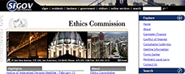
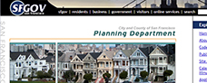
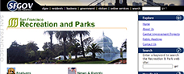
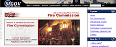
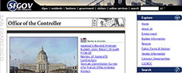

Our Past & Current Work
Web Page & Web Site Design
Indexideas website design, and website development portfolio
Sfgov Department Rent Board
Details: Website Design, Web Development

Sfgov Ethics Commission
Details: Web Design, Website Development

Sfgov Port of San Francisco
Details: Web Development, CMS Maintenance
Sfgov Office of Planning
Details: Web Design, CMS Maintenance
Sfgov Film Commission
Details: CMS Maintenance, Web Development
Sfgov Mayors Office of Housing
Details: Web Design, Website Maintenance
Sfgov Office of the Mayor
Details: Website Design, Web Development

San Francisco Park & Reck
Details: CMS Maintenance, Website Design
Sfgov.com City of San Francisco
Details: Website Design, Web Development

Sfgov Fire Commission
Details: Web Development, CMS Maintenance
Sf Department of Acessor Recorder
Details: Web Design, Website Development

Sfgov Department of the Controller
Details: Web Design, Web Development